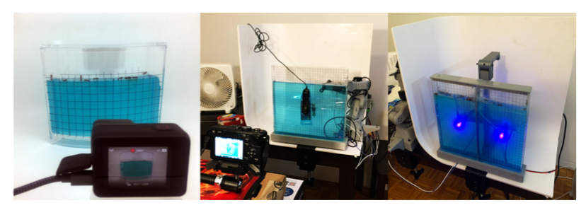
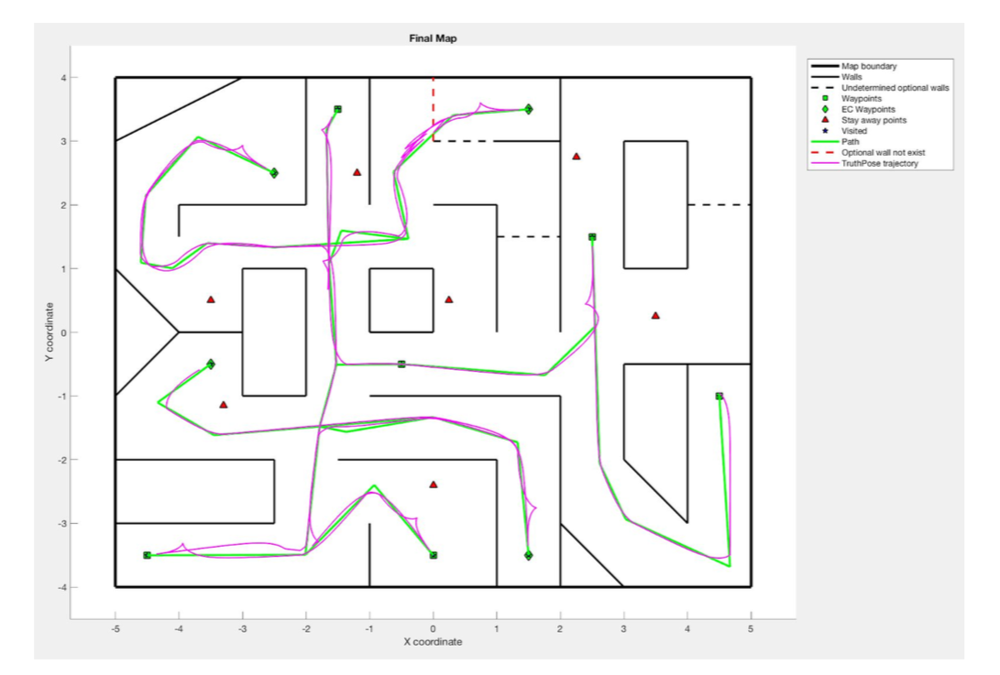
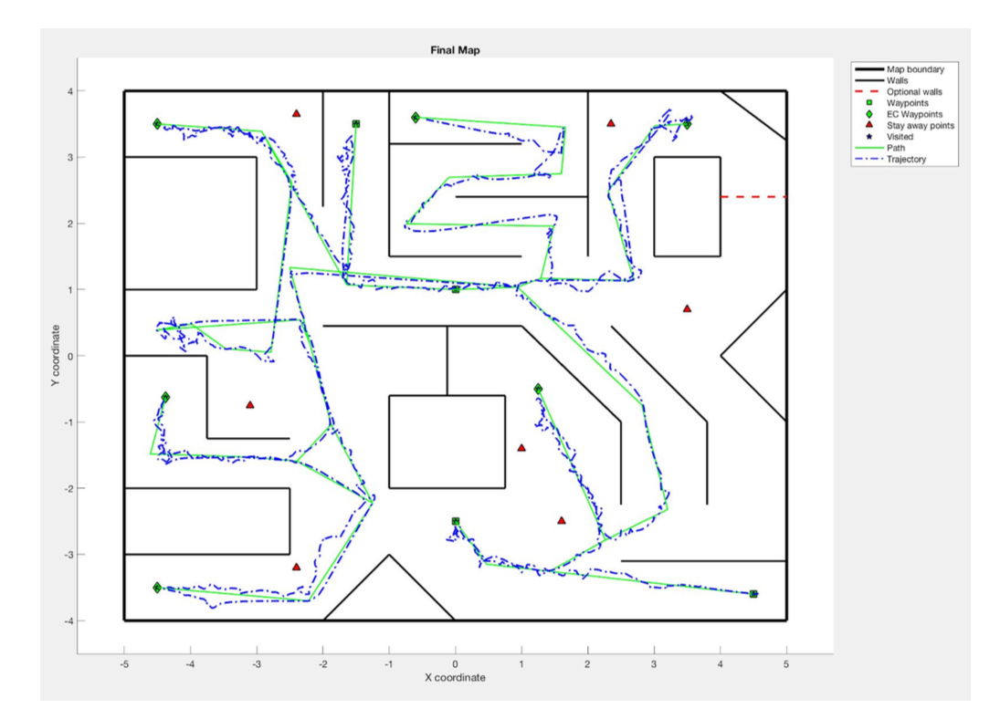
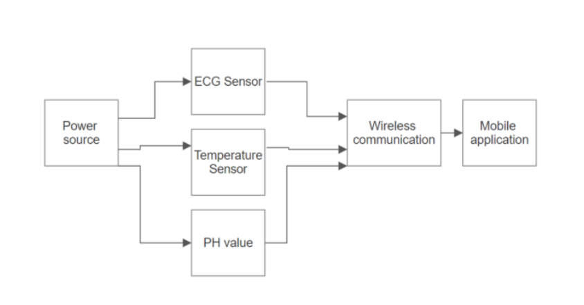

In this project, we will use Artemis Nano as our core processor. Besides, we will have ToF (time of flight) sensor and the IMU chip to combine precise acceleration and angular rate measurement in order to implement the dynamic behavior on the robot. The project is still in progress. Please see more detail on this website.
Ant Subtractors
We learned that harvester ants are attracted to close range UV light and repelled by infrared wavelengths which can be used to modify the group behavior. Our project aims to show the ability to influence ant tunneling behavior in the nutrient gel by controlling UV light location using a static jig and a dynamic 6-axis robotic arm. We ran 8 experiments over the span of 2 months, with each test lasting between 3-7 days. Our control showed that the ants once acclimated to the arena, dug tunnels at 2mm per hour, although the digging rate was highly episodic, with periods of no digging interspersed with periods of rapid digging. They show a strong preference for hard edges and would dig straight down from the 4 corners of the enclosure before digging any branches or diagonal tunnels up.

Figure: From Left to Right: Control, Robot Arm, Stationary Setups.
Autonomous Mobile Robots
The project is to design a localization algorithm to make the virtual robot be able to detect the optional walls in the environment and pass through all the targets without hitting any obstcales. For the localization algorithm, we decided to use the particle filter at the initial searching. The robot will keep rotating until it finds the maximum depth direction from the start point, so it can consider more measurements and identify the location more precisely. Besides, we used the EKF beacon to support the particle filter localization. Once the robot detects the beacon, it will take the estimation pose and calculate the particle filter position, so the localization will not lose easily.Our algorithm could work well and the robot could finally reach the target without hitting any obstcales. Also, it can detect the optional wall and draw the correct map in the end.
 
Figure: From Left to Right: The PRM result, and the final competition test.
The Smart-Cap Embedded System
This is a Hack-a-Thon project which is to develop hardware and software prototypes that can improve our daily life. Our target customers are pedestrians, bikers, and disabilities. We developed the SmartCap system under the Linux environment with the Raspberry Pi 3+, a Pi camera, and buzzer sensors. We used OpenCV to train the dataset and design our “danger algorithm” that is able to detect an object and its speed. If the object's speed increases in an area of the screen, the system will determine as a dangerous situation. Then, LED lights and buzzers will adjust the flashing speed and beeping rate according to the speed of an object approaching behind. When the object reduces its speed, the lights, and buzzer stops. This was a prototype that was made in two days, so if we wanted to expand the project in the future, we could integrate analytics in order to accommodate different object speeds, sizes, and human reaction times. The demonstration is shown in the video.
Video: The demostration of the LTA robot.
Lighter-Than-Air Robot Swarm
The prototype is currently capable of manually-controlled flight. It uses a Raspberry Pi Zero W for computation, AprilTags detected through a Raspberry Pi camera for localization, and time-of-flight sensors for obstacle avoidance. This sensor data is sent over a WiFi connection to a base station program running on a PC, where a human operator can view it and send flight commands back to the drone. I designed a PCB for the prototype in order to improve its weight and performance. I also modified the flight-sensor program, Apriltags detection program, and the server control program of the system. Then, I tested the program performance of the system and assembled all the parts on the PCB. Last, I designed the projector and the motor chassis for the prototype. The demonstration is shown in the following video.
Video: The demostration of the LTA robot.
The Automatic Gain Control System
The objective of the project is to develop an automatic gain control system, which includes a Raspberry pi model 3, an audio amplifier, an analog to digital converter (ADC), a digital to analog converter (DAC), and a speaker. Our primary goal is to build a system that can protect speakers by reducing the gain on the audio amplifier when distortion is detected, and increasing gain once it is safe to do so. The second goal is to create an automated DJ that is able to detect people and the temperature in the room so that we can determine what type of music we should play. We view this project as an embedded system that could be added onto a more powerful amplifier in order to protect expensive passive speakers. The detail could be seen in this website.
Capital Letter Recognition with Harris Corner
Harris corner detection is a corner detection operator that is often used within computer vision systems to extract certain kinds of features of an image. It is often used in image registration, 3D reconstruction, and object recognition. Our project is a letter recognition system using the harris corner algorithm on an FPGA. Our goal is to utilize the characteristics of the DE1-Soc board to implement the image processing parallelization. We use M10K blocks instead of normal registers to store pixel information to prevent exceeding the usage of the logic and the number of registers on the board. In our design, the user will send the image pixel array to the HPS through the command console, and the value will be shared with the FPGA through the SRAM. Then, the pixel data will be convoluted with the given 3x3 Gaussian filter matrix and be computed with the Harris corner equation to get the corner's weight of each pixel. The FPGA will send the response back to the HPS through the SRAM to do the non-max suppression of the image. Last, the result array will be compared with the training database to find the most possible alphabet letter and show the answer on the VGA display.
From the figures below, we could see when the letter was predicted right, the green box and a smile face would appear. However, if the prediction went wrong, the red box with a sad face will show and the system will tell the user which letter it thought to be.
Please see more detail on this website.
Video: The Harris Corner Letter Recognition system Presentation.
Multi-sensing flexible system used for real-time monitoring
In my thesis, I used an instrument amplifier (AD623) to combine two signal inputs into one signal output. The input signal is applied to PNP transistors, acting as voltage buffers and providing a common-mode signal to the input amplifiers. An absolute value of 50 kΩ resistors in each amplifier feedback assures gain programmability. Then, I used a passive second-order high pass filter and an active second order low pass filter to control the frequency range between 0.5 Hz and 150 Hz. I also used a notch filter with a cutoff frequency at 60 Hz to reduce the impact of the noise. Last, I did several tests of the ECG sensor and it worked properly. I then started designing the wireless program, so the monitor sensor could send the collected data through mobile applications. The wireless program could be able to communicate with the BLE chip (nrf51822), but the phone was not able to receive enough data because of the receiving rate limitation. All in all, the project worked well and gave my professor several ideas on the enhancement of making sensors more flexible to wear. I believed that improving the stability in the long-term for physiological condition monitoring is a crucial direction for further research.

Figure: System block diagram.
If you are still interested, please click here to see the complete thesis.
Undergraduate small projects
1. Advanced silicon ICs fabrication: Click here
2. Boeing AH-64 Apache CAD model: Click here
3. Improvement of serpentine networks in crack resistance: Click here
4. Zero Energy Home: Click here
5. Op-Amp Design: Click here
6. Embedded Systems-Keypad Subsystem: Click here
7. Optimized Locomotive Alternative (GE): Click here
8. Optical Theremin Design process: Click here